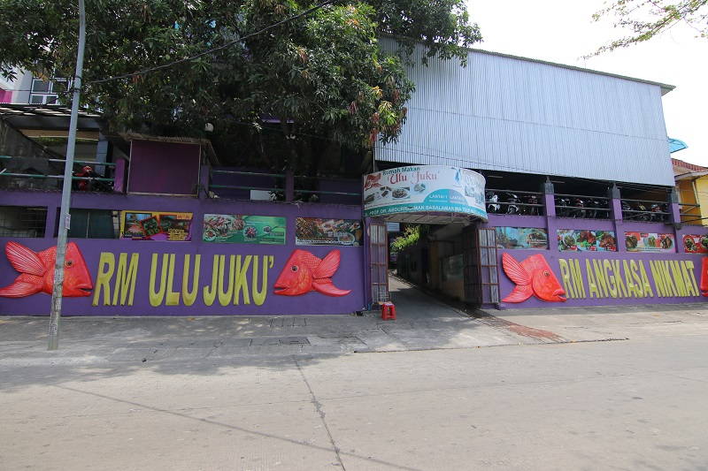
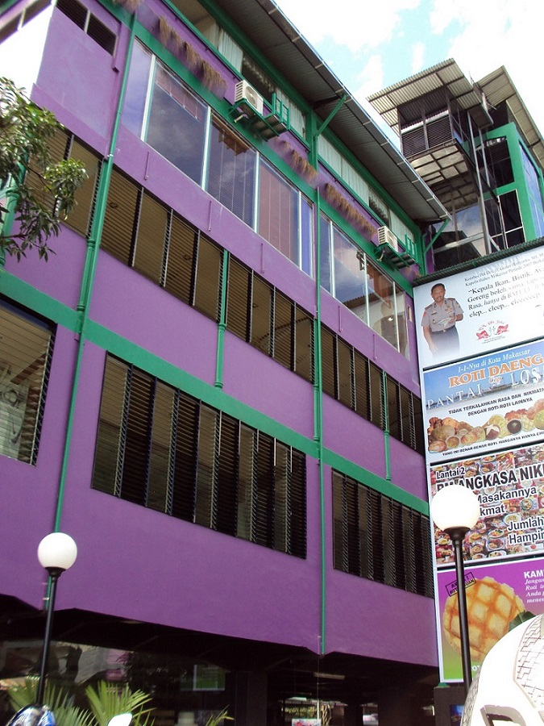

Sejarah

RM Ulu Juku pertama kali buka tahun 2005, didirikan empat orang,
yakni Ahmad Hidayat, Rahmin Nurma, Nursida, dan Nadjamuddin. Empat orang
tersebut adalah para calon guru, alumni Universitas Hasanuddin dan
IKIP Makassar. Mereka lalu memikirkan inovasi yang bisa dilakukan terhadap
makanan khas Makassar, yang sebagian besar berbahan dasar ikan.
Rumah makan pertama di Jalan Abdullah Daeng Sirua ternyata mendapat
respons positif dari masyarakat Makassar. Setiap waktu makan siang,
baik pada hari kerja maupun hari libur, rumah makan itu selalu penuh sesak.
Hingga akhirnya diputuskan untuk membuka cabang dengan mengontrak di Jalan AP Pettarani
yang diberi nama RM Ulu Juku 2.
Seiring berjalannya wkatu, akhirnya pada tahun 2010 RM Ulu Juku resmi pindah ke tempat
baru yang merupakan bangunan milik sendiri yang berada di Jl. Prof. Dr.
Abdurrahman Basalamah No. 99A (Eks. Jl. Racing Center). Di tempat baru ini
RM Ulu Juku semakin meningkatkan fasilitas dan layanan dari yang hanya warung
pinggir jalan menjadi restoran dengan gedungnya yang megah.
Fasilitas

Di gedung yang baru ini, RM Ulu Juku menyediakan 4 lantai untuk menjamu
pelanggan mereka, mulai dari basement untuk tempat parkir yang nyaman bagi para pelanggan
kemudian ada lantai 1 untuk restoran umum, lalu lantai 2 untuk ruang serbaguna
di atasnya lagi terdapat lantai 3 yang berisi ruang-ruang VIP dan yang paling
atas di lantai 4 ada ballroom yang bisa digunakan untuk acara pernikahan.
Restoran, VIP Room dan Ballroom
Lantai 1 di RM Ulu Juku merupakan restoran umum yang bisa digunakan untuk makan bersama
teman, keluarga, maupun rekan-rekan kerja, sedangkan di lantai 2 merupakan ruang serbaguna
yang bisa digunakan untuk acara ulang tahun, seminar, lamaran, aqiqah dll. Lalu di lantai 3
terdapat 6 VIP Room yang semua ruangannya dilengkapi dengan karaoke, full AC dan toilet in room.
Di lantai paling atas yaitu lantai 4 terdapat ballroom yang berkapasitas 400 orang dengan
interior nya sangat indah, bisa digunakan untuk berbagai macam acara mulai dari seminar,
family gathering, syukuran, lamaran, pernikahan dll.
Layanan
Selain melayani pelanggan untuk makan di tempat, RM Ulu Juku juga menerima
pesanan untuk makan di luar.
Catering, Coffee Break, Nasi Dos, Tumpeng, Snack Dos dll.
RM Ulu Juku bisa melayani pesanan makanan sesuai permintaan pelanggan, bisa di rumah,
kantor, kampus, sekolah, bahkan di atas kapal. Sajian makanannya pun bermacam-macam, bisa
dengan catering, coffee break, nasi dos, snack dos, pondokan, tumpeng dll.